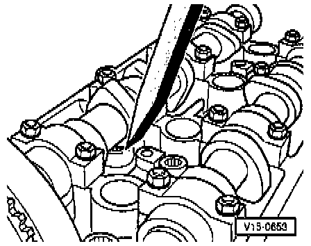

Lifter / Lash Adjuster: Testing and Inspection
NOTE:
- Replace defective lifter(s) as complete assemblies (cannot be adjusted or repaired).
- Irregular valve noises when starting engine are normal.
PROCEDURE
1. Start engine and run until radiator cooling fan comes on once.
2. Increase engine speed to about 2500 rpm for 2 minutes.
3. If the hydraulic lifters are still noisy, locate faulty lifters as follows:
a. Remove cylinder head (valve) cover.
b. Rotate crankshaft clockwise using vibration damper mounting bolt, until cam lobe of the lifter to be checked is pointing upwards.
c. Measure clearance between cam and lifter.
- If clearance is in excess of 0.1 mm, replace lifter.
- If clearance is less than 0.1 mm or none, proceed with check.

d. Press lifter down with a wooden or plastic wedge.
- If clearance in excess of 1 mm is felt before lifter contacts valve, replace lifter.
CAUTION:
- When new lifters have been installed, the engine must not be started for approx. 30 minutes.
- Hydraulic circuit must settle (otherwise valves will strike pistons).